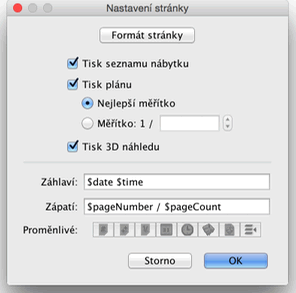
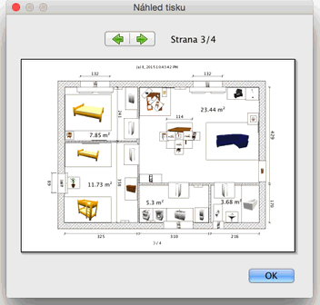

| Tisk projektu | |||
Projekt vytisknete nabídkou Projekt > Tisk.... V základním nastavení tiskne program Sweet Home 3D seznam nábytku, plán projektu a odpovídající 3D náhled projektu, za použití základní velikosti papíru, okrajů a orientace papíru.  V okně nastavení stránky můžete kliknutím na Formát strany měnit velikost papíru a jeho orientaci. Rovněž můžete zvolit, zda chcete tisknout seznam nábytku, plán a 3D náhled projektu. K náhledu tisku strany slouží nabídka Projekt > Náhled tisku ....  V okně náhledu tisku uvidíte, jak bude projekt vytištěn na straně za stranou. K pohybu v náhledu používejte tlačítka šipek, případně šipky klávesnice. |
|